Code
library(tidyverse)
library(ape)
library(phangorn)
library(pegas)
library(strataG)
library(coda)
library(ggmcmc)
library(perm)
library(snpR)
library(adegenet)
library(pcadapt)
library(knitr)
library(graph4lg)Here I’m just loading a bunch of R packages that we’ll need.
library(tidyverse)
library(ape)
library(phangorn)
library(pegas)
library(strataG)
library(coda)
library(ggmcmc)
library(perm)
library(snpR)
library(adegenet)
library(pcadapt)
library(knitr)
library(graph4lg)And here are some homebrewed functions that will be helpful.
# Function library
harvest.model.likelihoods <- function(workingDir = workingDir,
outfileName = "outfile.txt",
multilocus = T){
# this function harvests model marginal likelihoods for models calculated by
# the program migrate-n (Beerli & Felsenstein 2001).
# It takes as input a directory full of directories,
# each of which contains output from a migrate model, and is named
# after that model.
#initialize a data frame to take the values
modelMarglikes <- data.frame(model=character(),
thermodynamic=numeric(),
bezier.corrected=numeric(),
harmonic=numeric())
# loop through directories in the working directory, each of which is name
# after a different model
for(i in list.dirs(workingDir, full.names = F)[-1]){ #i<-"stepping.stone"
modelDir<-file.path(workingDir,i)
print(modelDir)
#scan in the outfile, separating at each newline
outfile<-scan(file=file.path(modelDir,outfileName),what="character",sep="\n")
#find the line with the likelihoods on it and split on runs of spaces
marglikeline <- strsplit(grep(" All ",outfile,value=T),
"\\s+", perl = T)[[1]][3:5]
# if(length(marglikeline)==0){next}
marglikes <- c(i,marglikeline)
modelMarglikes <- rbind(modelMarglikes,marglikes, deparse.level = 2)
}
names(modelMarglikes) <- c("model","thermodynamic","bezier.corrected","harmonic")
modelMarglikes[2:4] <- sapply(modelMarglikes[2:4], as.numeric)
return(modelMarglikes)
}
bfcalcs<-function(df,ml="bezier.corrected"){
# This calculates log bayes factors on data frames output by
# harvest.model.likelihoods(), following Johnson and Omland (2004)
# You may choose the likelihood flavor with
# ml = "bezier.corrected", "thermodynamic" or "harmonic"
#df$thermodynamic <- as.numeric(df$thermodynamic)
#df$bezier.corrected <- as.numeric(df$bezier.corrected)
#df$harmonic <- as.numeric(df$harmonic)
mlcol <- df[[ml]]
bmvalue <- mlcol[which.max(mlcol)]
lbf <- 2*(mlcol-bmvalue)
choice <- rank(-mlcol)
modelprob <- exp(lbf/2)/sum(exp(lbf/2))
dfall <- cbind(df,lbf,choice,modelprob)
return(dfall)
}
migrants.per.gen<-function(x){
#a function for creating Nm vectors out of m and Theta vectors.
#x<-x[[1]]
m<-names(x)[which(grepl("M_",names(x)))] #names of m columns
#theta<-names(x)[which(grepl("Theta_",names(x)))] #names of theta columns
for(n in m){
t<-paste("Theta",strsplit(n,split="_")[[1]][3],sep="_")
x[,paste("Nm",strsplit(n,split="_")[[1]][2],strsplit(n,split="_")[[1]][3],sep="_")]<- x[,which(names(x)==n)]*x[,which(names(x)==t)]
#this hairy little statement makes a new column named "Nm_X_Y" and then fills it by multiplying the M_X_Y column by the Theta_Y column
}
return(x)
}Brian Bowen’s student Anne Lee asked me to do a migrate analysis on two species of deepwater snapper, Etelis carbunculus and Etelis coruscans. She wrote:
My thesis focuses on assessing the population structure and origin of deepwater snappers, Etelis carbunculus and Etelis coruscans, that were sampled from Japan, Johnston Atoll, Main Hawaiian Islands, and Northwestern Hawaiian Islands. My data consists of SNPs and I will be using migrate to help me with the analysis of the origin. This will help me examine the patterns of gene flow within both species to compare the Hawaiian populations to Johnston Atoll and Japan populations.
Because these guys are so deep down, and harder to sample, we just have single population samples from the four populations she mentions above.


Bee-utiful deepwater snappers wondering where they came from, where they are going, and whether they can get back in the water now.
I’m also going to see how much I can learn about quarto notebooks, which Rstudio is apparently using to replace Rmarkdown notebooks. They seem like an improvement so far! Following along here, using the simple option to render to the docs folder.
Anne placed all the data on Google Drive, zipped by population. I will download them with the gdown python package. This involves looking up the google id for each file in the URL of the share link and pasting that into gdown thusly. They were quite large, and unzip and gzip wouldn’t work. I used jar (which I didn’t even know could uncompress things) as suggested here
gdown https://drive.google.com/uc?id=142BTkLDRNa6TXk1l4vhxRMxcejOg3rMt --output ECA_Japan.zip
gdown https://drive.google.com/uc?id=1NFI7bH6kmsDcKwB7Y6IkE1MkOAhypCu0 --output ECA_MHI.zip
gdown https://drive.google.com/uc?id=1hufzYMZNUX_q9-QX3JwIbKYOvjsmSwks --output ECA_NWHI.zip
gdown https://drive.google.com/uc?id=1_Z3zJVPVg7cazG_BWrcoJExM36YcFVqU --output ECO_Japan.zip
gdown https://drive.google.com/uc?id=1N50_iwNGLK6bZmjfrm58lgSZgC4RHw74 --output ECO_Johnston.zip
gdown https://drive.google.com/uc?id=1YvWbC3kkY7IJKjmjOQIJIKPAJD-KnExd --output ECO_MHI.zip
gdown https://drive.google.com/uc?id=1VIBPxE08eZQuTWnW3kWmQBTBbp8FUNEZ --output ECO_NWHI.zip
#gdown https://drive.google.com/uc?id=1rIWvFeQqaGOSIiNe385eIrHsGqMls2qD --output Etelis_ECO249.R2.fq.gz
jar xvf ECA_Japan.zip
# etc.Need to rename the files into Illumina format in order for Stacks to recognize the paired reads.
cd raw
for f in *.R1.fq.gz
do
mv $f ${f/.R1.fq.gz/_R1_001.fastq.gz}
done
for f in *.R2.fq.gz
do
mv $f ${f/.R2.fq.gz/_R2_001.fastq.gz}
done
cd ..Hmm… gotta rename the cleaned files too. All code is being run on both species.
cd cleaned
for f in *001.1.fq.gz
do
mv $f ${f/_R[12]_001.1.fq.gz/.1.fq.gz}
done
for f in *001.2.fq.gz
do
mv $f ${f/_R[12]_001.2.fq.gz/.2.fq.gz}
done
#rename the "remainder reads" that have had their pair removed for low quality
for f in *001.rem.1.fq.gz; do mv $f ${f/_R[12]_001.rem.1.fq.gz/.rem.1.fq.gz}; done
for f in *001.rem.2.fq.gz; do mv $f ${f/_R[12]_001.rem.2.fq.gz/.rem.2.fq.gz}; doneOy - so denovo_map.pl crashed with this message:
Error: Failed to find any matching paired-end reads in ‘./cleaned/Etelis_S36.2.fq.gz’.
Aborted.
Julian Catchen gives the solution here. Because these data were already run through process_radtags once to demultiplex them, it attached a \1 to the labels of all primary reads and a \2 to the labels of all paired reads. When I re-ran them in process_radtags, it attached an extra flag to each, which then confused tsv2bam. Julian provides the below code to remove the extra flags.
ls -1 *.1.fq.gz | sed -E 's/\.1\.fq\.gz//' | while read line; do zcat ${line}.1.fq.gz | sed -E 's/\/1$//' > ../cleaned/${line}.1.fq; done
ls -1 *.2.fq.gz | sed -E 's/\.2\.fq\.gz//' | while read line; do zcat ${line}.2.fq.gz | sed -E 's/\/2$//' > ../cleaned/${line}.2.fq; done
cd ../cleaned
parallel gzip ::: *I’m going to use the denovo_map.pl pipeline. This command will take data from ./cleaned and the popmap provided by Anne and -m 5 reads per stack, -M 4 distance between stacks, -n 4 distance between catalog loci. Running on 8 -T threads and only keeping loci that appear in 80% of individuals in all 4 populations
denovo_map.pl --samples ./cleaned/ --popmap popmapECA.tsv --out-path ./pipeline --paired \
-m 5 -M 4 -n 4 -T 12 -r 80 -p 4 -X "populations: --fasta-samples" -X "populations: --filter-haplotype-wise"Now I need to re-run populations to get more statistics. Original populations output is in output1, this will be in output2.
Settings for keeping loci that occur in 80 percent of indivs per population (so 4/5 of the Johnston invivs for coruscans). I’m being intentionally stringent by setting the p-value cutoff for hwe at 0.05.
populations -P ./ -O ./output2_r80 -M ../popmapECO.tsv -t 12 -p 4 -r 80 -H --hwe --fstats --p-value-cutoff 0.05 --fasta-loci --fasta-samples --vcf --genepop --structure --treemix --fasta-samples-raw Removed 98351 loci that did not pass sample/population constraints from 115429 loci.
Kept 17078 loci, composed of 5539395 sites; 17697 of those sites were filtered, 49261 variant sites remained.
Number of loci with PE contig: 17078.00 (100.0%);
Mean length of loci: 314.36bp (stderr 0.38);
Number of loci with SE/PE overlap: 2546.00 (14.9%);
Mean length of overlapping loci: 285.08bp (stderr 0.47); mean overlap: 27.61bp (stderr 0.13);
Mean genotyped sites per locus: 315.85bp (stderr 0.37).
Population summary statistics (more detail in populations.sumstats_summary.tsv):
Japan: 13.333 samples per locus; pi: 0.16058; all/variant/polymorphic sites: 5394107/49261/33997; private alleles: 6596
MHI: 13.55 samples per locus; pi: 0.15487; all/variant/polymorphic sites: 5394107/49261/31541; private alleles: 3166
NWHI: 25.142 samples per locus; pi: 0.15329; all/variant/polymorphic sites: 5394107/49261/38082; private alleles: 7321
Number of variable sites found to be significantly out of Hardy-Weinberg equilibrium (<0.05):
Japan: 1145
MHI: 1103
NWHI: 1527
Number of loci found to be significantly out of Hardy-Weinberg equilibrium (<0.05):
Japan: 3917
MHI: 4185
NWHI: 3407
(more detail in populations.sumstats.tsv and populations.hapstats.tsv)
Population pair divergence statistics (more in populations.fst_summary.tsv and populations.phistats_summary.tsv):
Japan-MHI: mean Fst: 0.030208; mean Phi_st: 0.023147; mean Fst': 0.025616; mean Dxy: 0.0019853
Japan-NWHI: mean Fst: 0.02638; mean Phi_st: 0.028095; mean Fst': 0.029652; mean Dxy: 0.0019372
MHI-NWHI: mean Fst: 0.014407; mean Phi_st: 0.0018347; mean Fst': 0.0016037; mean Dxy: 0.0018308Removed 130579 loci that did not pass sample/population constraints from 141967 loci.
Kept 11388 loci, composed of 3690405 sites; 32281 of those sites were filtered, 59470 variant sites remained.
Number of loci with PE contig: 11388.00 (100.0%);
Mean length of loci: 314.06bp (stderr 0.42);
Number of loci with SE/PE overlap: 1079.00 (9.5%);
Mean length of overlapping loci: 291.05bp (stderr 0.59); mean overlap: 24.47bp (stderr 0.12);
Mean genotyped sites per locus: 315.02bp (stderr 0.42).
Population summary statistics (more detail in populations.sumstats_summary.tsv):
Johnston_Atoll: 4.1993 samples per locus; pi: 0.074411; all/variant/polymorphic sites: 3587423/59470/15449; private alleles: 5208
MHI: 13.68 samples per locus; pi: 0.060304; all/variant/polymorphic sites: 3587423/59470/25569; private alleles: 7241
NWHI: 26.37 samples per locus; pi: 0.060932; all/variant/polymorphic sites: 3587423/59470/38902; private alleles: 15366
Japan: 13.217 samples per locus; pi: 0.054013; all/variant/polymorphic sites: 3587423/59470/22717; private alleles: 6028
Number of variable sites found to be significantly out of Hardy-Weinberg equilibrium (<0.05):
Johnston_Atoll: 7
MHI: 1134
NWHI: 1648
Japan: 700
Number of loci found to be significantly out of Hardy-Weinberg equilibrium (<0.05):
Johnston_Atoll: 3998
MHI: 2984
NWHI: 2673
Japan: 3395
(more detail in populations.sumstats.tsv and populations.hapstats.tsv)
Population pair divergence statistics (more in populations.fst_summary.tsv and populations.phistats_summary.tsv):
Johnston_Atoll-MHI: mean Fst: 0.038243; mean Phi_st: 0.012337; mean Fst': 0.0011598; mean Dxy: 0.0014711
Johnston_Atoll-NWHI: mean Fst: 0.022267; mean Phi_st: 0.0056917; mean Fst': -0.0033667; mean Dxy: 0.0013478
Johnston_Atoll-Japan: mean Fst: 0.041778; mean Phi_st: 0.018924; mean Fst': 0.0048455; mean Dxy: 0.0014546
MHI-NWHI: mean Fst: 0.013568; mean Phi_st: 0.0027592; mean Fst': 0.0011102; mean Dxy: 0.0012735
MHI-Japan: mean Fst: 0.021407; mean Phi_st: 0.0058972; mean Fst': 0.0028619; mean Dxy: 0.0013316
NWHI-Japan: mean Fst: 0.013484; mean Phi_st: 0.002933; mean Fst': 0.0018245; mean Dxy: 0.0012352Settings for keeping loci that occur in 100 percent of indivs per population ::: {.cell}
populations -P ./ -O ./output3_r100 -M ../popmapECO.tsv -t 12 -p 4 -r 100 -H --hwe --fstats --p-value-cutoff 0.05 --fasta-loci --fasta-samples --vcf --genepop --structure --treemix --fasta-samples-raw
# and again with single SNPs from each locus so we can test for linkage and selection
populations -P ./ -O ./output4_r100.SNP -M ../popmapECA.tsv -t 12 -p 3 -r 100 --hwe --fstats --p-value-cutoff 0.05 --vcf --genepop --write-random-snp:::
Removed 111882 loci that did not pass sample/population constraints from 115429 loci.
Kept 3547 loci, composed of 1134453 sites; 6916 of those sites were filtered, 6537 variant sites remained.
Number of loci with PE contig: 3547.00 (100.0%);
Mean length of loci: 309.83bp (stderr 0.69);
Number of loci with SE/PE overlap: 288.00 (8.1%);
Mean length of overlapping loci: 285.06bp (stderr 1.00); mean overlap: 24.45bp (stderr 0.24);
Mean genotyped sites per locus: 310.68bp (stderr 0.68).
Population summary statistics (more detail in populations.sumstats_summary.tsv):
Japan: 14 samples per locus; pi: 0.10528; all/variant/polymorphic sites: 1101972/6537/3955; private alleles: 1170
MHI: 14 samples per locus; pi: 0.09766; all/variant/polymorphic sites: 1101972/6537/3434; private alleles: 511
NWHI: 27 samples per locus; pi: 0.097747; all/variant/polymorphic sites: 1101972/6537/4642; private alleles: 1340
Number of variable sites found to be significantly out of Hardy-Weinberg equilibrium (<0.05):
Japan: 101
MHI: 90
NWHI: 110
Number of loci found to be significantly out of Hardy-Weinberg equilibrium (<0.05):
Japan: 1197
MHI: 1358
NWHI: 1331
(more detail in populations.sumstats.tsv and populations.hapstats.tsv)
Population pair divergence statistics (more in populations.fst_summary.tsv and populations.phistats_summary.tsv):
Japan-MHI: mean Fst: 0.025802; mean Phi_st: 0.015567; mean Fst': 0.0094451; mean Dxy: 0.00087231
Japan-NWHI: mean Fst: 0.020607; mean Phi_st: 0.018272; mean Fst': 0.010517; mean Dxy: 0.00082861
MHI-NWHI: mean Fst: 0.012892; mean Phi_st: 0.00097809; mean Fst': 0.00022075; mean Dxy: 0.00081207Removed 140925 loci that did not pass sample/population constraints from 141967 loci.
Kept 1042 loci, composed of 334846 sites; 3569 of those sites were filtered, 3654 variant sites remained.
Number of loci with PE contig: 1042.00 (100.0%);
Mean length of loci: 311.35bp (stderr 1.36);
Number of loci with SE/PE overlap: 117.00 (11.2%);
Mean length of overlapping loci: 285.68bp (stderr 1.71); mean overlap: 24.41bp (stderr 0.38);
Mean genotyped sites per locus: 312.62bp (stderr 1.33).
Population summary statistics (more detail in populations.sumstats_summary.tsv):
Johnston_Atoll: 5 samples per locus; pi: 0.060494; all/variant/polymorphic sites: 325749/3654/975; private alleles: 520
MHI: 14 samples per locus; pi: 0.036669; all/variant/polymorphic sites: 325749/3654/1226; private alleles: 470
NWHI: 27 samples per locus; pi: 0.037317; all/variant/polymorphic sites: 325749/3654/2064; private alleles: 1019
Japan: 14 samples per locus; pi: 0.033766; all/variant/polymorphic sites: 325749/3654/1143; private alleles: 463
Number of variable sites found to be significantly out of Hardy-Weinberg equilibrium (<0.05):
Johnston_Atoll: 0
MHI: 32
NWHI: 45
Japan: 19
Number of loci found to be significantly out of Hardy-Weinberg equilibrium (<0.05):
Johnston_Atoll: 524
MHI: 422
NWHI: 405
Japan: 396
(more detail in populations.sumstats.tsv and populations.hapstats.tsv)
Population pair divergence statistics (more in populations.fst_summary.tsv and populations.phistats_summary.tsv):
Johnston_Atoll-MHI: mean Fst: 0.039663; mean Phi_st: 0.02039; mean Fst': 0.0012821; mean Dxy: 0.00073676
Johnston_Atoll-NWHI: mean Fst: 0.026268; mean Phi_st: 0.015567; mean Fst': 0.00037957; mean Dxy: 0.0006556
Johnston_Atoll-Japan: mean Fst: 0.041015; mean Phi_st: 0.020409; mean Fst': 0.0021605; mean Dxy: 0.0007176
MHI-NWHI: mean Fst: 0.012433; mean Phi_st: 0.00025697; mean Fst': 4.0397e-05; mean Dxy: 0.00049144
MHI-Japan: mean Fst: 0.019806; mean Phi_st: 0.0039369; mean Fst': 0.00060169; mean Dxy: 0.00050736
NWHI-Japan: mean Fst: 0.012751; mean Phi_st: 0.0020762; mean Fst': 0.00052502; mean Dxy: 0.00047009scp -r argo:./Etelis/coruscans/pipeline/output3_r100 ./populations_r100
scp -r argo:./Etelis/carbunculus/pipeline/output3_r100 ./populations_r100 ecor_haps <- read.genepop("coruscans/populations_r100/populations.haps.gen")
Converting data from a Genepop .gen file to a genind object...
File description: Stacks v2.61; GenePop v4.1.3; September 30, 2022
...done.levels(ecor_haps$pop) <- c("JA","MHI","NWHI","JP")
ecor_dapc <- dapc(ecor_haps,pop = ecor_haps$pop, scale = T, pca.select="nbEig", n.pca = 50, n.da=3)Warning in .local(x, ...): Some scaling values are null.
Corresponding alleles are removed.scatter(ecor_dapc)ecor_hwe <- hw.test(ecor_haps, B = 1000)Let’s take a look with the randomly selected SNPs
ecor_snps.genind <- read.genepop("coruscans/populations_r100/populations.randsnp.gen")
Converting data from a Genepop .gen file to a genind object...
File description: # Stacks v2.61; GenePop v4.1.3; September 30, 2022
...done.levels(ecor_snps.genind$pop) <- c("JA","MHI","NWHI","OK")
ecor_dapc_snps <- dapc(ecor_snps.genind,pop = ecor_snps.genind$pop, scale = T,
pca.select="nbEig", n.pca = 50, n.da=3)Warning in .local(x, ...): Some scaling values are null.
Corresponding alleles are removed.scatter(ecor_dapc_snps)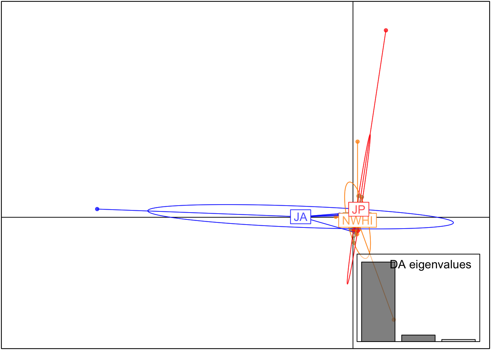
I will use Will Hemstrom’s new package SNPr to further evaluate and filter the SNPs that I randomly selected from each locus.
popmap <- read_tsv("coruscans/popmapECO.tsv",col_names = c("sampID","pop"))Rows: 60 Columns: 2── Column specification ────────────────────────────────────────────────────────
Delimiter: "\t"
chr (2): sampID, pop
ℹ Use `spec()` to retrieve the full column specification for this data.
ℹ Specify the column types or set `show_col_types = FALSE` to quiet this message.ecor_snps <- read_vcf(file = "coruscans/populations_r100/populations.randsnp.vcf",
sample.meta = popmap)Scanning file to determine attributes.
File attributes:
meta lines: 14
header_line: 15
variant count: 929
column count: 69
Meta line 14 read in.
All meta lines processed.
gt matrix initialized.
Character matrix gt created.
Character matrix gt rows: 929
Character matrix gt cols: 69
skip: 0
nrows: 929
row_num: 0
Processed variant: 929
All variants processedI’ve already implemented stringent filters in Stacks to only include individuals with all loci and loci found in all individuals. Now going to implement a strict HWE filter - if a locus is out of HWE in any population (hwe_facets = "pop") after a Bonferroni correction, then it will be removed. Also going to remove non-variant loci, and loci with only a single minor allele (“singletons”).
ecor_snps <- filter_snps(ecor_snps, min_ind = 0.9999, min_loci = 0.9999, re_run = "full",
hwe = 0.05, fwe_method = "BY", hwe_facets = "pop", singletons = T,
verbose = T)Initializing...
Filtering loci. Starting loci: 929
Filtering non-biallelic loci...
0 bad loci
Filtering non_polymorphic loci...
0 bad loci
Filtering loci sequenced in few individuals...
0 bad loci
Filtering singletons.
521 bad loci
Filtering loci out of hwe...
7 bad loci
Ending loci: 401
Filtering individuals. Starting individuals: 60
Filtering out individuals sequenced in few kept loci...
No individuals removed.snpR uses facets to subset data on either sample metadata (such as sample ID, or population) or SNP metadata. Here we will look at per-individual stats. Also, note that the calculations are just attached to the data object, so we don’t lose track of them. Nice.
ecor_snps <- calc_hs(ecor_snps, facets = "sampID")
ecor_snps <- calc_he(ecor_snps, facets = "sampID")
ecor_snps <- calc_ho(ecor_snps, facets = "sampID")
# and dang, just like that we can get a PCA
p <- plot_clusters(ecor_snps, facets = "pop")Formatting data...p$plots$pca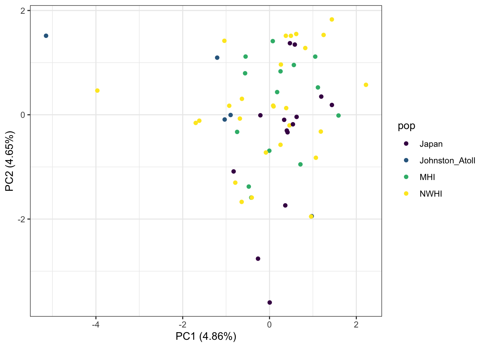
so there’s that one weirdo at Johnston, who is A150… we can identify him like this. He has double the mean \(H_e\) and \(H_o\).
ecor_snps <- calc_genetic_distances(ecor_snps, facets = "sampID",method = "Nei")
stats.ind <- get.snpR.stats(ecor_snps, facets="sampID", stats = c("hs","ho","he"))
ind.dists <- get.snpR.stats(ecor_snps,facets="sampID", stats = "genetic_distance")
heatmap(as.matrix(ind.dists$sampID$.base$Nei))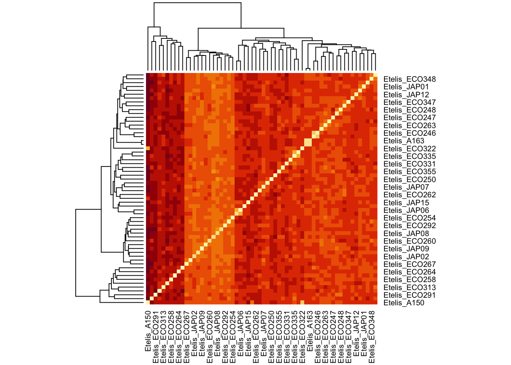
# drop'im
ecor_snps <- ecor_snps[,-which("Etelis_A150" %in% names(ecor_snps))]
p2 <- plot_clusters(ecor_snps, facets = "pop")Formatting data...p2$plots$pca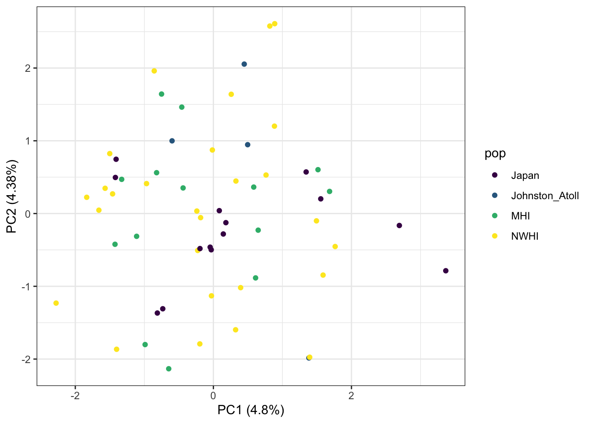
And here are some summary stats about each population
ecor_snps <- calc_ho(ecor_snps, facets = "pop")
ecor_snps <- calc_he(ecor_snps, facets = "pop")
ecor_snps <- calc_maf(ecor_snps, facets = "pop")
ecor_snps <- calc_pi(ecor_snps, facets = "pop")
ecor_snps <- calc_private(ecor_snps, facets = "pop")
ecor_snps <- calc_hwe(ecor_snps, facets = "pop")
ecor_snps <- calc_fis(ecor_snps, facets = "pop")
ecor_snps <- calc_pairwise_fst(ecor_snps, facets = "pop")
stats <- get.snpR.stats(ecor_snps, facets = "pop", stats = c("maf", "ho","he","hwe", "fis","pi", "private"))
stats$weighted.means# and here is Fst
ecor_fst <- get.snpR.stats(ecor_snps, facets = "pop", stats = c("fst"))
ecor_fst$fst.matrix$pop
p1 Johnston_Atoll MHI NWHI
1: Japan 0.01160639 0.0071644684 0.000928317
2: Johnston_Atoll NA -0.0004782547 -0.014014024
3: MHI NA NA 0.001275046A little stuck on LD. But there are so few markers (intentionally) that it really shouldn’t be an issue.
ecor_snps <- calc_pairwise_ld(ecor_snps, facets ="CHROM", verbose = T)
ldstats <- get.snpR.stats(ecor_snps, stats = "ld", facets = "CHROM")
ld <- plot_pairwise_ld_heatmap(ecor_snps, facets=c("CHROM"))Following along [here](https://bcm-uga.github.io/pcadapt/articles/pcadapt.html.
First, write out the data into plink format
format_snps(ecor_snps, output = "plink", facets = "pop",
outfile = "coruscans/plink/coruscans.plink",chr = "CHROM",
position = "position" )ecor_plink <- read.pcadapt("coruscans/plink/coruscans.plink.bed",type="bed")
pca20 <- pcadapt(ecor_plink, K = 20)
plot(pca20, option = "screeplot")Warning: `guides(<scale> = FALSE)` is deprecated. Please use `guides(<scale> =
"none")` instead.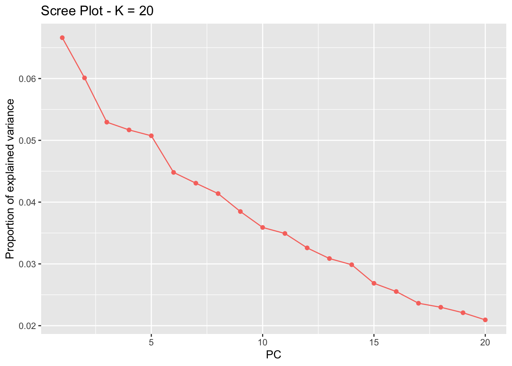
Based on the scree plot I think we’ll use 5 PCs.
pca5 <- pcadapt(ecor_plink, K = 5)
plot(pca5, option = "scores", pop = popmap$pop[-1])Warning: Use of `df$Pop` is discouraged. Use `Pop` instead.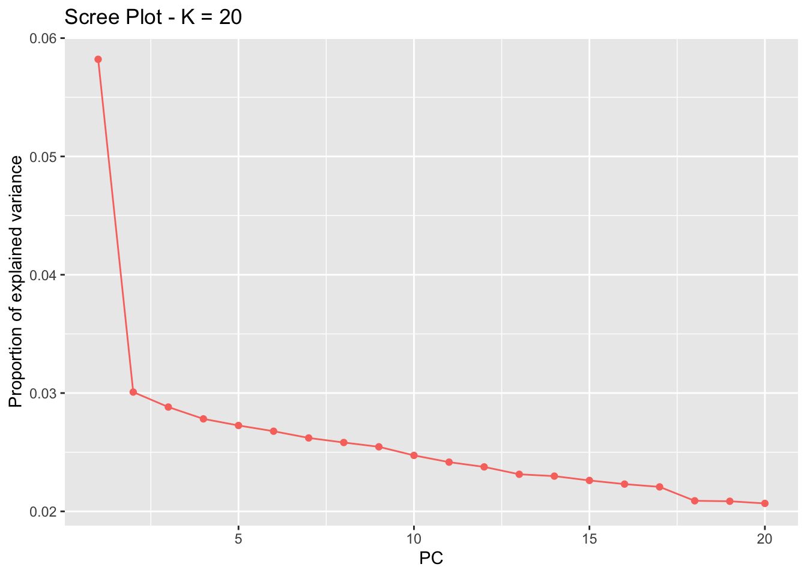
plot(pca5, option = "manhattan")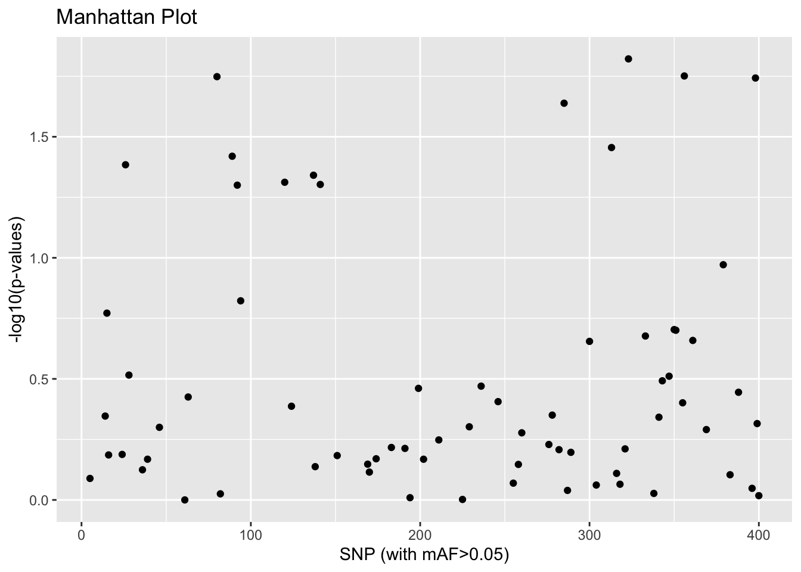
#qqplot
plot(pca5, option = "qqplot")Warning: `guides(<scale> = FALSE)` is deprecated. Please use `guides(<scale> =
"none")` instead.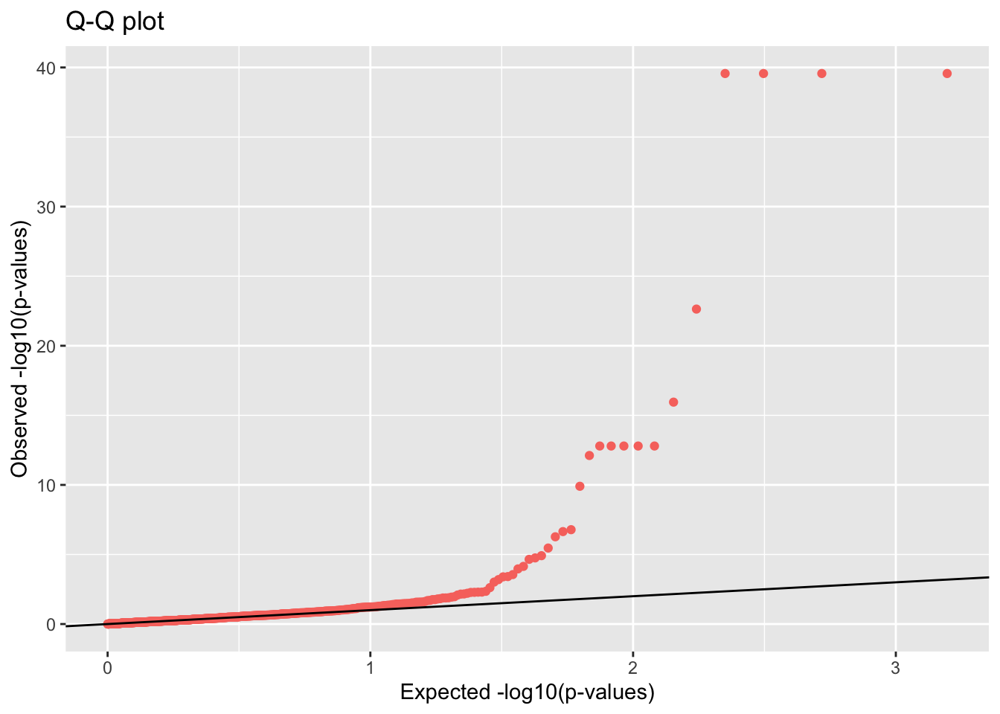
#histogram
hist(pca5$pvalues, xlab = "p-values", main = NULL, breaks = 50, col = "orange")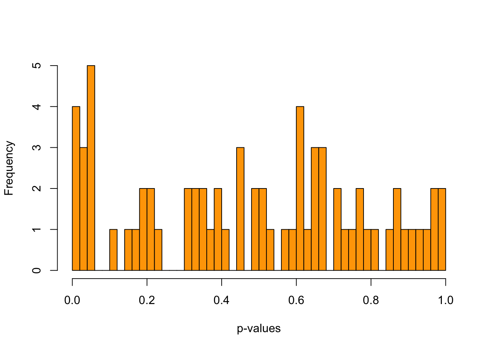
Just because there is a little cluster of length(pca5_outliers) in the qqplot and histogram, I’m going to mark them as outliers and remove them.
padj <- p.adjust(pca5$pvalues, method = "none")
alpha <- 0.125
pca5_outliers <- which(padj < alpha)
#remove outliers
ecor_snps2 <- ecor_snps[-pca5_outliers,]#write to vcf
format_snps(ecor_snps2, output = "vcf", facets = "pop",
outfile = "coruscans/hwe.pcadapt.filtered.snps.vcf",chr = "CHROM",
position = "position" )
write.csv(pca5_outliers, "coruscans/pcadapt.outliers.csv")
#grab the locus names and write them to a whitelist to be included in the migrate data file.
whitelist <- ecor_snps2@snp.meta$CHROM
write.table(sort(as.numeric(ecor_snps2@snp.meta$CHROM)), "coruscans/ecor_whitelist.txt", quote=F, row.names = F,col.names =F )
ecor_haps2 <- ecor_haps[,loc = locNames(ecor_haps) %in% whitelist]
# write them out
genind_to_genepop(ecor_haps2,output = "coruscans/hwe.pcadapt.filtered.haps.txt")ecor_haps2 <- read.genepop("coruscans/hwe.pcadapt.filtered.haps.gen")
Converting data from a Genepop .gen file to a genind object...
File description: Conversion of an object of class 'genind' into a GENEPOP file with the package 'graph4lg'
...done.levels(ecor_haps2$pop) <- c("JA","JP", "MHI","NWHI")
ecor_dapc2 <- dapc(ecor_haps2,pop = ecor_haps2$pop, scale = T, pca.select="nbEig", n.pca = 50, n.da=3)
scatter(ecor_dapc2)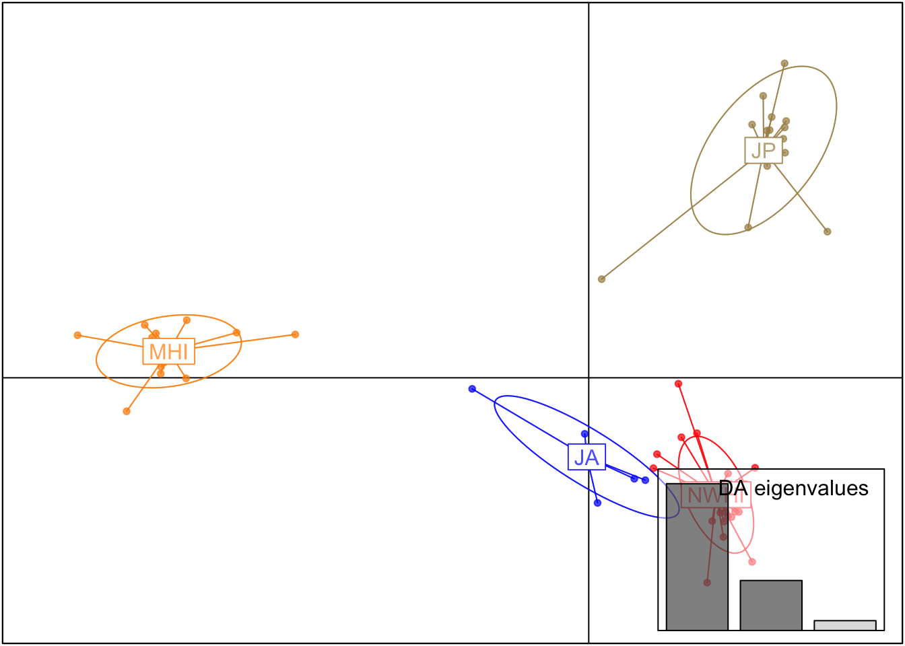
ecor_snps2.genind <- read.genepop("coruscans/hwe.pcadapt.filtered.snps.gen")
Converting data from a Genepop .gen file to a genind object...
File description: coruscans/hwe_genepop
...done.levels(ecor_snps2.genind$pop) <- c("JP","JA","MHI","NWHI")
ecor_dapc2_snps <- dapc(ecor_snps2.genind,pop = ecor_snps2.genind$pop, scale = T,
pca.select="nbEig", n.pca = 50, n.da=3)
scatter(ecor_dapc2_snps)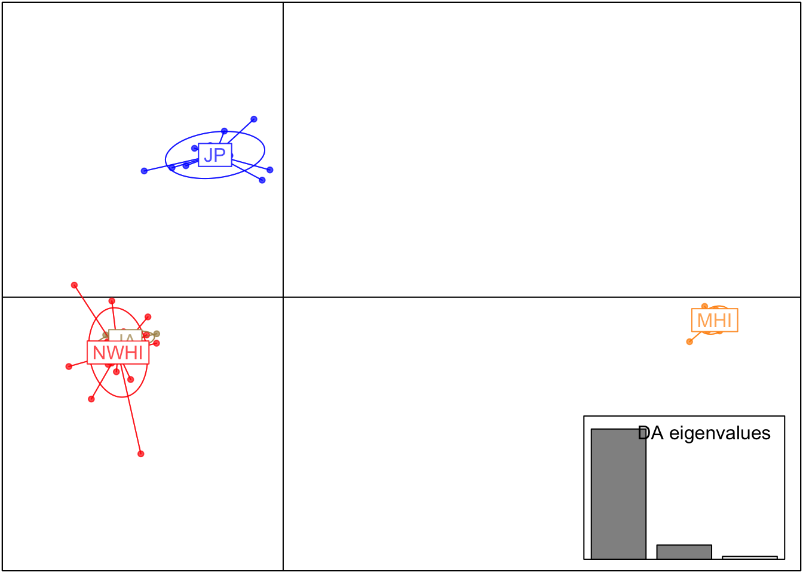
So, in the SNPs I seem to have removed the differences between NWHI and JA with my filtering. But not in the haplotype dataset.
popmap2 <- tibble(pop=c(rep("Japan",14),rep("Johnston",4),rep("MHI",14),rep("NWHI",27)))
ecor_snps2 <- read_genepop(file = "coruscans/hwe.pcadapt.filtered.snps.genepop",sample.meta = popmap2)Warning in .sub_and_t_1_2_to_A_C(ac, ncol(gt)): Since allelic identities are not clear, alleles at each locus will be saved as A and C. If this data is later reformatted for use elsewhere, please be aware that this may cause issues for some downstream analyses (since, for example, all SNPs will be nonsensically noted as transversions rather than transitions!).
To prevent this, use a different format that specifies allelic identities.
This is not an issue for any snpR functions save those that rely on ancestral/derived allelic identities.Warning in validityMethod(object): Some snp metadata columns contain unacceptable special characters. Unaccepted characters: '.', '~', or any whitespace.
These can cause unexpected behaviour if the subect columns are used as facets.ecor_snps2 <- calc_ho(ecor_snps2, facets = "pop")
ecor_snps2 <- calc_he(ecor_snps2, facets = "pop")
ecor_snps2 <- calc_maf(ecor_snps2, facets = "pop")
ecor_snps2 <- calc_pi(ecor_snps2, facets = "pop")
ecor_snps2 <- calc_private(ecor_snps2, facets = "pop")
ecor_snps2 <- calc_hwe(ecor_snps2, facets = "pop")
ecor_snps2 <- calc_fis(ecor_snps2, facets = "pop")
ecor_snps2 <- calc_pairwise_fst(ecor_snps2, facets = "pop")
stats <- get.snpR.stats(ecor_snps2, facets = "pop", stats = c("maf", "ho","he","hwe", "fis","pi", "private"))
stats$weighted.means# and here is Fst
ecor_fst2 <- get.snpR.stats(ecor_snps2, facets = "pop", stats = c("fst"))
ecor_fst2$fst.matrix$pop
p1 Johnston MHI NWHI
1: Japan 0.01149998 0.0062751070 0.001113241
2: Johnston NA 0.0009475688 -0.013072697
3: MHI NA NA 0.001639347ecar_haps <- read.genepop("carbunculus/populations_r100/populations.haps.gen")
Converting data from a Genepop .gen file to a genind object...
File description: Stacks v2.61; GenePop v4.1.3; September 30, 2022
...done.levels(ecar_haps$pop) <- c("OK","MHI","NWHI")
ecar_dapc <- dapc(ecar_haps,pop = ecar_haps$pop, scale = T, pca.select="nbEig", n.pca = 50, n.da=3)Warning in .local(x, ...): Some scaling values are null.
Corresponding alleles are removed.scatter(ecar_dapc)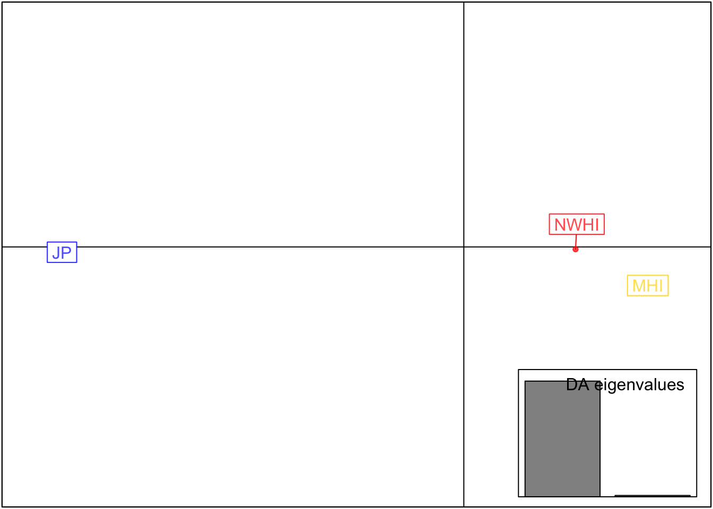
Let’s take a look with the randomly selected SNPs
ecar_snps.genind <- read.genepop("carbunculus/populations_r100/populations.randsnp.gen")
Converting data from a Genepop .gen file to a genind object...
File description: # Stacks v2.61; GenePop v4.1.3; September 30, 2022
...done.levels(ecar_snps.genind$pop) <- c("OK","MHI","NWHI")
ecar_dapc_snps <- dapc(ecar_snps.genind,pop = ecar_snps.genind$pop, scale = T,
pca.select="nbEig", n.pca = 50, n.da=3)Warning in .local(x, ...): Some scaling values are null.
Corresponding alleles are removed.scatter(ecar_dapc_snps)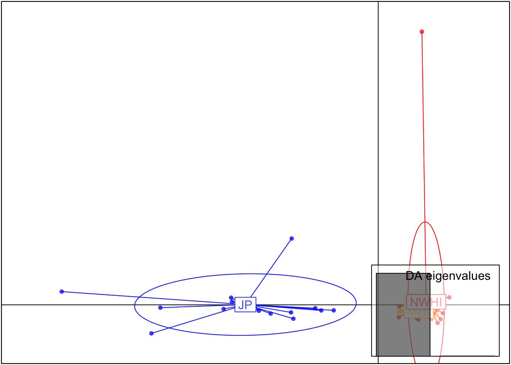
I will use Will Hemstrom’s new package SNPr to further evaluate and filter the SNPs that I randomly selected from each locus.
ecar_popmap <- read_tsv("carbunculus/popmapECA.tsv",col_names = c("sampID","pop"))Rows: 55 Columns: 2── Column specification ────────────────────────────────────────────────────────
Delimiter: "\t"
chr (2): sampID, pop
ℹ Use `spec()` to retrieve the full column specification for this data.
ℹ Specify the column types or set `show_col_types = FALSE` to quiet this message.ecar_snps <- read_vcf(file = "carbunculus/populations_r100/populations.randsnp.vcf",
sample.meta = ecar_popmap)Scanning file to determine attributes.
File attributes:
meta lines: 14
header_line: 15
variant count: 2750
column count: 64
Meta line 14 read in.
All meta lines processed.
gt matrix initialized.
Character matrix gt created.
Character matrix gt rows: 2750
Character matrix gt cols: 64
skip: 0
nrows: 2750
row_num: 0
Processed variant 1000
Processed variant 2000
Processed variant: 2750
All variants processedI’ve already implemented stringent filters in Stacks to only include individuals with all loci and loci found in all individuals. Now going to implement a strict HWE filter - if a locus is out of HWE in any population (hwe_facets = "pop") after a Bonferroni correction, then it will be removed. Also going to remove non-variant loci, and loci with only a single minor allele (“singletons”).
ecar_snps <- filter_snps(ecar_snps, min_ind = 0.9999, min_loci = 0.9999, re_run = "full",
hwe = 0.05, fwe_method = "BY", hwe_facets = "pop", singletons = T,
verbose = T)Initializing...
Filtering loci. Starting loci: 2750
Filtering non-biallelic loci...
0 bad loci
Filtering non_polymorphic loci...
0 bad loci
Filtering loci sequenced in few individuals...
0 bad loci
Filtering singletons.
1064 bad loci
Filtering loci out of hwe...
20 bad loci
Ending loci: 1666
Filtering individuals. Starting individuals: 55
Filtering out individuals sequenced in few kept loci...
No individuals removed.snpR uses facets to subset data on either sample metadata (such as sample ID, or population) or SNP metadata. Here we will look at per-individual stats. Also, note that the calculations are just attached to the data object, so we don’t lose track of them. Nice.
ecar_snps <- calc_hs(ecar_snps, facets = "sampID")
ecar_snps <- calc_he(ecar_snps, facets = "sampID")
ecar_snps <- calc_ho(ecar_snps, facets = "sampID")
# and dang, just like that we can get a PCA
p <- plot_clusters(ecar_snps, facets = "pop")Formatting data...p$plots$pca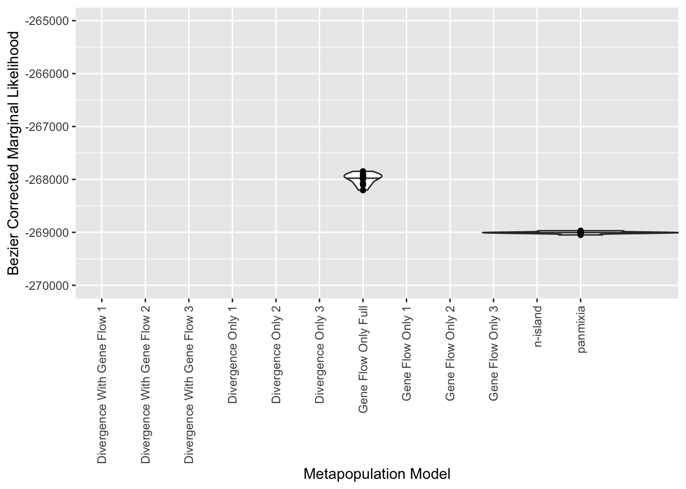
The separation between both Hawaiian populations and Japan is pretty evident even in the PCA.
ecar_snps <- calc_genetic_distances(ecar_snps, facets = "sampID",method = "Nei")
stats.ind <- get.snpR.stats(ecar_snps, facets="sampID", stats = c("hs","ho","he"))
ind.dists <- get.snpR.stats(ecar_snps,facets="sampID", stats = "genetic_distance")
heatmap(as.matrix(ind.dists$sampID$.base$Nei))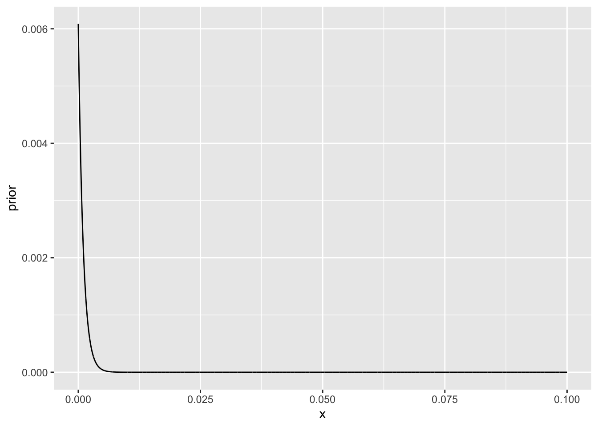
And there doesn’t seem to be any reason to drop any individuals.
And here are some summary stats about each population
ecar_snps <- calc_ho(ecar_snps, facets = "pop")
ecar_snps <- calc_he(ecar_snps, facets = "pop")
ecar_snps <- calc_maf(ecar_snps, facets = "pop")
ecar_snps <- calc_pi(ecar_snps, facets = "pop")
ecar_snps <- calc_private(ecar_snps, facets = "pop")
ecar_snps <- calc_hwe(ecar_snps, facets = "pop")
ecar_snps <- calc_fis(ecar_snps, facets = "pop")
ecar_snps <- calc_pairwise_fst(ecar_snps, facets = "pop")
stats <- get.snpR.stats(ecar_snps, facets = "pop", stats = c("maf", "ho","he","hwe", "fis","pi", "private"))
stats$weighted.means# and here is Fst
ecar_fst <- get.snpR.stats(ecar_snps, facets = "pop", stats = c("fst"))
ecar_fst$fst.matrix$pop
p1 MHI NWHI
1: Japan 0.01746465 0.021466084
2: MHI NA 0.001113613A little stuck on LD. But there are so few markers (intentionally) that it really shouldn’t be an issue.
ecar_snps <- calc_pairwise_ld(ecar_snps, facets ="CHROM", verbose = T)
ldstats <- get.snpR.stats(ecar_snps, stats = "ld", facets = "CHROM")
ld <- plot_pairwise_ld_heatmap(ecar_snps, facets=c("CHROM"))Following along [here](https://bcm-uga.github.io/pcadapt/articles/pcadapt.html.
First, write out the data into plink format
format_snps(ecar_snps, output = "plink", facets = "pop",
outfile = "carbunculus/plink/carbunculus.plink",chr = "CHROM",
position = "position" )ecar_plink <- read.pcadapt("carbunculus/plink/carbunculus.plink.bed",type="bed")
pca20 <- pcadapt(ecar_plink, K = 20)
plot(pca20, option = "screeplot")Warning: `guides(<scale> = FALSE)` is deprecated. Please use `guides(<scale> =
"none")` instead.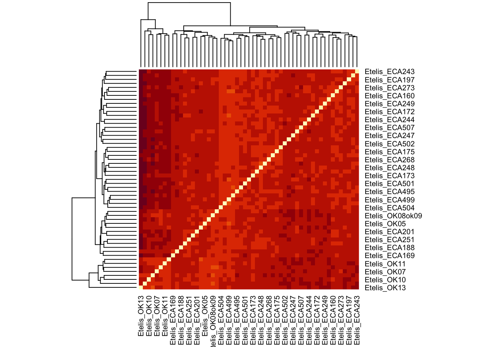
Based on the scree plot I think we’ll use 2 PCs.
pca2 <- pcadapt(ecar_plink, K = 2)
plot(pca2, option = "scores", pop = ecar_popmap$pop)Warning: Use of `df$Pop` is discouraged. Use `Pop` instead.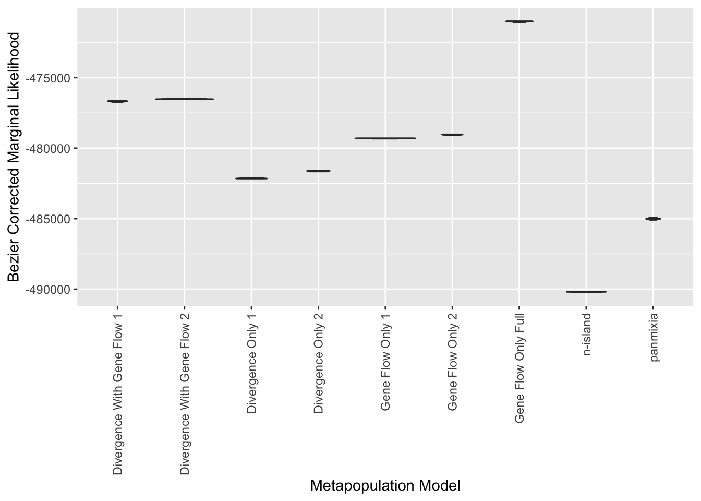
plot(pca2, option = "manhattan")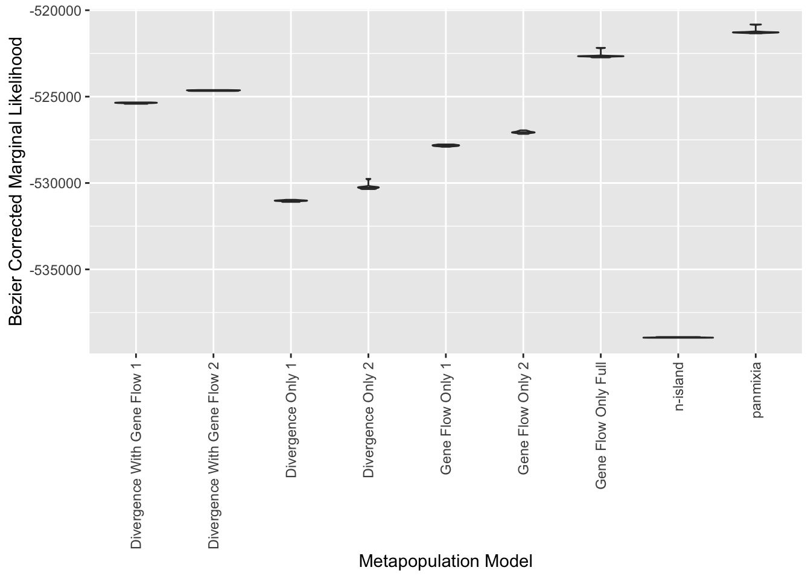
#qqplot
plot(pca2, option = "qqplot")Warning: `guides(<scale> = FALSE)` is deprecated. Please use `guides(<scale> =
"none")` instead.#histogram
hist(pca2$pvalues, xlab = "p-values", main = NULL, breaks = 50, col = "orange")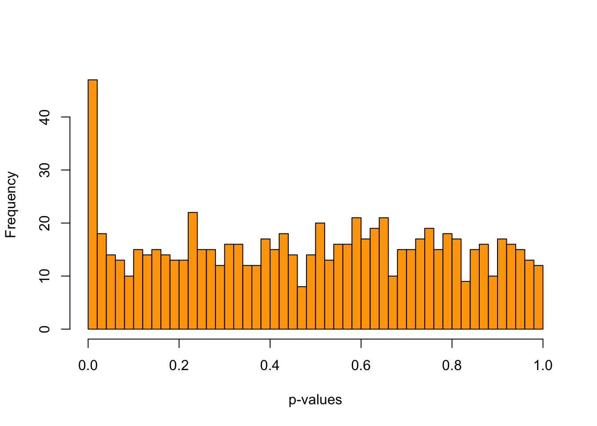
Just because there is a little cluster of length(pca5_outliers) in the qqplot and histogram, I’m going to be super-conservative and use the same p-value cutoff as coruscans, mark them as outliers and remove them.
padj <- p.adjust(pca2$pvalues, method = "none")
alpha <- 0.125
pca2_outliers <- which(padj < alpha)
#remove outliers
ecar_snps2 <- ecar_snps[-pca2_outliers,]
# pick 388I’m going to write a whitelist with 388 randomly selected SNPs - to be in parity with coruscans. Adding more would take longer.
#write to vcf
format_snps(ecar_snps2, output = "vcf", facets = "pop",
outfile = "carbunculus/hwe.pcadapt.filtered.snps.vcf",chr = "CHROM",
position = "position" )
write.csv(pca2_outliers, "carbunculus/pcadapt.outliers.csv")
#grab the locus names, pick a random subset of 388, and write them to a whitelist to be included in the migrate data file.
whitelist <- ecar_snps2@snp.meta$CHROM[sample(1:nsnps(ecar_snps2),388)]
write.table(sort(as.numeric(whitelist)),
"carbunculus/ecar_whitelist.txt", quote=F, row.names = F,col.names =F )
ecar_haps2 <- ecar_haps[,loc = locNames(ecar_haps) %in% whitelist]
# write them out
genind_to_genepop(ecar_haps2,output = "carbunculus/hwe.pcadapt.filtered.haps.txt")Paul Maier created this script to convert Stacks haplotypes to migrate format.
I had a doozy of a time trying to get this to work this time around: the script was written in python2. which is nearly deprecated. I first tried to use 2to3 to upgrade the script to python3, but there were a few stray tabs I couldn’t figure out. I eventually landed here, and used the following commands to install pyenv, which can handle multiple python installs.
brew install pyenv
pyenv install 2.7.18
pyenv versions
echo 'export PYENV_ROOT="$HOME/.pyenv"' >> ~/.zshrc\necho 'command -v pyenv >/dev/null || export PATH="$PYENV_ROOT/bin:$PATH"' >> ~/.zshrc\necho 'eval "$(pyenv init -)"' >> ~/.zshrc
exec "$SHELL"
pyenv shell 2.7.18 # use python 2 for this shell session
pip install numpy
pip install --upgrade pip # need to update pip to be able to install scipy
pip install scipyI had to remove all the [individualName] tokens from the populations.samples.fa to get it to work. Also, I added a SampleID column and header row to the popmap for use by fasta2genotype.py. Finally, I created a whitelist by editing the vcf file output above of the fully cleaned set of SNPs.
python ../../fasta2genotype/fasta2genotype.py populations_r100/populations.samples2.fa ecor_whitelist.txt \
popmapECO_f2g.tsv NA Ecoruscans2.mig
###################################################################
### ###
### Fasta2Genotype | Data Conversion | Version 1.10 ###
### ###
### Cite as follows: ###
### ###
### Maier P.A., Vandergast A.G., Ostoja S.M., Aguilar A., ###
### Bohonak A.J. (2019). Pleistocene glacial cycles drove ###
### lineage diversification and fusion in the Yosemite toad ###
### (Anaxyrus canorus). Evolution, in press. ###
### https://www.doi.org/10.1111/evo.13868 ###
### ###
###################################################################
Output type? [1] Migrate [2] Arlequin [3] DIYABC [4] LFMM [5] Phylip [6] G-Phocs [7] Treemix [8] Haplotype: 1
Loci to use? [1] Whitelist [2] All: 1
Remove restriction enzyme or adapter sequences? These may bias data. [1] Yes [2] No: 2
Coverage Cutoff (number reads for locus)? Use '0' to ignore coverage: 0
Remove monomorphic loci? [1] Yes [2] No: 1
Remove loci with excess heterozygosity? This can remove paralogs. [1] Yes [2] No: 1
Maximum heterozygosity cutoff for removing loci out of Hardy-Weinberg? 0.5
Filter for allele frequency? False alleles might bias data. [1] Yes [2] No: 2
Filter for missing genotypes? These might bias data. [1] Yes [2] No: 2
**************************************************************************************************************
*** ... BEGINNING CONVERSION ... ***
**************************************************************************************************************
Cataloging loci...
Counting locus lengths...
Cataloging populations...
Counting gene copies...
Counting alleles for each locus...
Identifying loci with excess heterozygosity...
Calculating observed heterozygosity and homozygosity...
Calculating expected heterozygosity and homozygosity...
Flagging loci with excess heterozygosity for removal...
Removing loci...
Outputting migrate-n file...
*** DONE! ***I then re-ran the script, selecting phylip output, with locus name headers, and all other options the same. I need the locus names in the order output by the script in order to run modeltest.
I had to remove all the [individualName] tokens from the populations.samples.fa to get it to work. Also, I added a SampleID column and header row to the popmap for use by fasta2genotype.py. Finally, I created a whitelist of 388 randomly selected loci by editing the vcf file output above of the fully cleaned set of SNPs. Used the same options as E. coruscans.
python ../../fasta2genotype/fasta2genotype.py populations_r100/populations.samples2.fa ecar_whitelist.txt \
popmapECA_f2g.tsv NA Ecarbunculus.migI then re-ran the script, selecting phylip output, with full sequences, haploid, all loci, not separated by ! locus name headers, and all other options the same. I need the locus names in the order output by the script in order to run modeltest. This is only needed to get the locus names in the next step.
I installed Migrate 5.0.4 as described here.
I need to figure out an overall mutation model to use with RAD loci. I received this advice one from Peter about how to construct these. I’ll use modelTest in the phangorn package to see where that gets me.
I renamed the FASTA headers in populations.samples.fa with BBEdit to create population.samples3.fa
Find: >CLocus_\d+_Sample_\d+_Locus_(\d+)_Allele_([01]) \[Etelis_(.+)\]
Replace: >\3_L\1_A\2
#first token is sample name, second is locus number(name) third is allele
#Also remove bad indiv A150 in coruscans
Find: >A150_.+\n.+\n
Replace:Lets load in the data and calculate some statistics for each locus. Previously Migrate-n only implemented the F84 (=HKY) model, with two rates (Transitions and Transversions) and gamma distributed rate variability.
Now it will take these possible models: 1 Jukes-Cantor model 2 Kimura 2-parameter model 3 Felsenstein 1981 (F81) model 4 Felsenstein 1984 (F84) model 5 Hasegawa-Kishino-Yano model 6 Tamura-Nei model
fastadata <- read.FASTA("carbunculus/populations_r100/populations.samples3.fa")
# read in the locus lengths, as optional additional way to make sure the stats
# and the migrate infile are ordered the same
#migrate_lengths <- read_lines("coruscans/Ecoruscans.mig", skip = 1, n_max=1) %>%
# str_split("\\t", simplify = T) %>% t(.) %>% tibble(length=.) %>% na.omit()
migrate_loci <- read_lines("carbunculus/Ecarbunculus.phy", skip = 1, n_max=1) %>%
str_split("\\t", simplify = T) %>% t(.) %>% tibble(locus_name=.) %>% filter(locus_name!="")
stats <- tibble(locus = character(),
length = numeric(),
segSites = numeric(),
nHaps = numeric(),
nucDiv = numeric(),
ttRatio = numeric(),
model = character(),
gammaShape = numeric(),
rate1 = numeric(),
rate2 = numeric(),
rate3 = numeric(),
rate4 = numeric(),
Q1= numeric(),
Q2 = numeric(),
Q3 = numeric(),
)
for(l in migrate_loci$locus_name){
L <- paste0("L",l,"_")
print(paste("Now Doing Locus", l, match(l, migrate_loci$locus_name), "out of", length(migrate_loci$locus_name)))
locus_dnabin <- fastadata[str_which(names(fastadata),pattern = L)]
# convert to package formats
locus_dnabin <- as.matrix(locus_dnabin)
locus_gtypes <- sequence2gtypes(locus_dnabin)
locus_phy <- phyDat(locus_dnabin)
#create a haplotype network .. to be continued
haps <- haplotype(locus_dnabin)
nhaps <- length(dimnames(haps)[[1]])
#tcs <- haploNet(haps)
#find parameters of HKY (F84) model
modeltest <- modelTest(locus_phy, model = c("JC","K80", "F81", "HKY","TrN"),
G = T, I = F, k = 4, mc.cores = 5)
# pick out the best model. If multiple models are tied for best, pick the simplest one
bestmodel <- modeltest$Model[which(modeltest$BIC == min(modeltest$BIC))][1]
#open the object environment
env <- attr(modeltest,"env")
bestparams <- get(bestmodel, env)
bestparams <- eval(bestparams, env=env)
# use this code for v3, which only has F84 (HKY)
#HKY <- modelTest(locus_phy, model = c("HKY"),
# G = T, I = F, k = 4)
#env <- attr(HKY, "env")
#HKYG <- get("HKY+G", env)
#model <- eval(HKYG, env=env)
# calculate TiTv Ratio
ttratio <- TiTvRatio(locus_gtypes)
stats <- bind_rows(stats, tibble(locus=L,
length = length(locus_dnabin[1,]),
segSites = length(seg.sites(locus_dnabin)),
nHaps = length(dimnames(haps)[[1]]),
nucDiv = nuc.div(locus_dnabin),
ttRatio = ttratio[3],
model = bestmodel,
gammaShape = bestparams$shape,
rate1 = bestparams$g[1],
rate2 = bestparams$g[2],
rate3 = bestparams$g[3],
rate4 = bestparams$g[4],
Q1 = sort(unique(bestparams$Q))[1],
Q2 = sort(unique(bestparams$Q))[2],
Q3 = sort(unique(bestparams$Q))[3]
))
}
#stats <- stats[which(stats$length %in% migrate_lengths$length),]
#setdiff(stats$length, as.numeric(migrate_lengths$length))
# write_csv(stats, "carbunculus/migrate_locus_statistics.csv")Write a space delimited textfile that can be added to the migrate data file in the format that Peter suggested.
stats <- read_csv("./coruscans/migrate_locus_statistics.csv")
kable(stats)
# write a space delimited textfile that can be added to the migrate data file
# following Peter's suggestion here:
#https://groups.google.com/g/migrate-support/c/XjV_4jZW4RI/m/HbRWoGY6AwAJ
migrate_mutation_models <- tibble(prefix = "#$",
locus=1:length(stats$locus),
type = "s",
model = stats$model,
q1 = stats$Q2,
q2 = stats$Q3)
#write_delim(migrate_mutation_models,"./coruscans/migrate_modelblock.txt", na="", delim = " ")Read them back in so we don’t have to recalculate them every time I knit.
So we have a 0 invariant loci, and the mean overall transition:transversion ratio is NaN. Mean gamma shape parameter is NA, which argues for only one rate.
To be added.
Here’s the parmfile I am using, based on my parmfile for Palythoa tuberculosa. This one depicts a model of divergence without gene flow. Migration prior is increased to have a maximum of 1e8 (100,000,000), and mean of 1e4 (10,000). This reflects a prior expectation that \(m/\mu\) will not be larger than this value, if m is not larger than 0.1 (10% of population migrates), assuming a nuclear mutation rate of 1e-9. Also on average one out of every 100K individuals will send a migrant (m = 1e-5).
################################################################################
# Parmfile for Migrate 4.4.4(git:v4-series-26-ge85c6ff)-June-1-2019 [do not remove these first TWO lines]
# generated automatically on
# Fri Feb 4 2022
menu=NO
nmlength=10
datatype=SequenceData
datamodel=HKY
ttratio=1.000000
freqs-from-data=YES
seqerror-rate={0.0001,0.0001,0.0001,0.0001}
categories=1 #no categories file specified
rates=1: 1.000000
prob-rates=1: 1.000000
autocorrelation=NO
weights=NO
recover=NO
fast-likelihood=NO
inheritance-scalars={1.00000000000000000000}
haplotyping=YES:no-report
population-relabel={1 2 3 4}
infile=../../Ecarbunculus.mig
random-seed=AUTO #OWN:410568459
title= Etelis coruscans
progress=YES
logfile=YES:logfile.txt
print-data=NO
outfile=outfile.txt
pdf-outfile=outfile.pdf
pdf-terse=YES
use-M=YES
print-tree=NONE
mig-histogram=MIGRATIONEVENTSONLY
skyline=NO #needs mig-histogram=ALL:...
theta=PRIOR:50
migration=PRIOR:10
rate=PRIOR:50
split=PRIOR:10
splitstd=PRIOR:10
mutation=CONSTANT
analyze-loci=A
divergence-distrib=E
custom-migration={
* 0 0 0
d * 0 0
0 d * 0
0 0 d *
}
geo=NO
updatefreq=0.200000 0.200000 0.200000 0.200000 #tree, parameter haplotype, timeparam updates
bayes-posteriorbins= 2000 2000
bayes-posteriormaxtype=TOTAL
bayes-file=YES:bayesfile
bayes-allfile=YES:bayesallfile
bayes-all-posteriors=YES:bayesallposterior
bayes-proposals= THETA METROPOLIS-HASTINGS Sampler
bayes-proposals= MIG SLICE Sampler
bayes-proposals= DIVERGENCE METROPOLIS-HASTINGS Sampler
bayes-proposals= DIVERGENCESTD METROPOLIS-HASTINGS Sampler
bayes-priors= THETA WEXPPRIOR: 0.0 0.001 0.1000000 0.01000
bayes-priors= MIG WEXPPRIOR: 0.0100 10000.000000 100000000 10000
bayes-priors= SPLIT * * WEXPPRIOR: 0.0 0.001 0.1000000 0.01000
bayes-priors= SPLITSTD * * WEXPPRIOR: 0.0 0.001 0.1000000 0.01000
bayes-hyperpriors=NO
long-chains=1
long-inc=100
long-sample=10000
burn-in=2000
auto-tune=YES:0.440000
assign=NO
heating=YES:1:{1.000000,1.500000,3.000000,1000000.000000}
heated-swap=YES
moving-steps=NO
gelman-convergence=No
replicate=YES:3
endCopy it up, and then make a total of 10 replicate copies of the folder.
scp -r ./migrate eric@moneta.tobolab.org:./Etelis/coruscans/migrate/rep1
#once on server, copy it 9 times
for a in $(seq 2 10); do cp -r rep1 rep$a; doneSo we will do 10 replicates of 3 replicates. This will start at r1, and run all models for that before moving on. Pretty sure this will finish one whole model before moving on to the next one (since all threads are being used for different loci)
### Bash Script
#!
for r in */
do
cd $r
echo $r
date
date > date.txt
for m in */
do
cd $m
date > date.txt
echo $m
date
mpirun -np 32 ~/migrate-5.0.4/src/migrate-n-mpi parmfile
sleep 1
cd ..
done
cd ..
doneAnd ten replicates finished in about 10 days! Found this guide to download everything except the massive bayesallfiles and pdfs
rsync -av -e ssh --exclude='bayes*' --exclude="*.pdf" --exclude="*.mig" eric@threadripper.tobolab.org:~/Etelis/coruscans ./coruscans/migrate/output
rsync -av -e ssh --exclude='bayes*' --exclude="*.pdf" --exclude="*.mig" eric@moneta.tobolab.org:~/Etelis/coruscans ./coruscans/migrate/output
rsync -av -e ssh --exclude='bayes*' --exclude="*.pdf" --exclude="*.mig" eric@threadripper.tobolab.org:~/Etelis/carbunculus ./carbunculus/migrate/outputrunDir <- "carbunculus/migrate/output"
likelist <- list()
for(r in 1:10){
rep = paste0("rep",r)
print(rep)
likelist[[rep]] <- harvest.model.likelihoods(workingDir=file.path(runDir,rep))
}
# Model selection for each replicate...
likelist %>% map(bfcalcs)The final model marginal likelihood estimates based on the mean of 10 replicates:
like.df <- likelist %>% bind_rows() %>% group_by(model)
means <- like.df %>% summarize(bezier.corrected = mean(bezier.corrected))
final_model <- bfcalcs(means)
final_modelDifference between panmixia and the second-place full model is very significant.
top.choice <- final_model$model[which(final_model$choice ==1)]
second.choice <- final_model$model[which(final_model$choice ==2)]
permTS(like.df$bezier.corrected[which(like.df$model == top.choice)],
like.df$bezier.corrected[which(like.df$model == second.choice)],
alternative = "greater", method = "exact.ce")
Exact Permutation Test (complete enumeration)
data: GROUP 1 and GROUP 2
p-value = 5.413e-06
alternative hypothesis: true mean GROUP 1 - mean GROUP 2 is greater than 0
sample estimates:
mean GROUP 1 - mean GROUP 2
1246.925 And a figure summarizing all this
models <- c("Divergence With Gene Flow 1","Divergence With Gene Flow 2","Divergence With Gene Flow 3",
"Divergence Only 1", "Divergence Only 2","Divergence Only 3",
"Gene Flow Only Full", "Gene Flow Only 1", "Gene Flow Only 2", "Gene Flow Only 3",
"n-island", "panmixia")
likesPlot <- likelist %>% bind_rows() %>% group_by(model) %>%
ggplot(mapping = aes(x=model, y = bezier.corrected)) +
geom_violin(draw_quantiles = 0.5) +
theme(axis.text.x = element_text(angle = 90, vjust = 0.5, hjust=1)) +
scale_x_discrete(labels = models) +
labs(x = "Metapopulation Model", y = "Bezier Corrected Marginal Likelihood")
likesPlotWarning in regularize.values(x, y, ties, missing(ties), na.rm = na.rm):
collapsing to unique 'x' values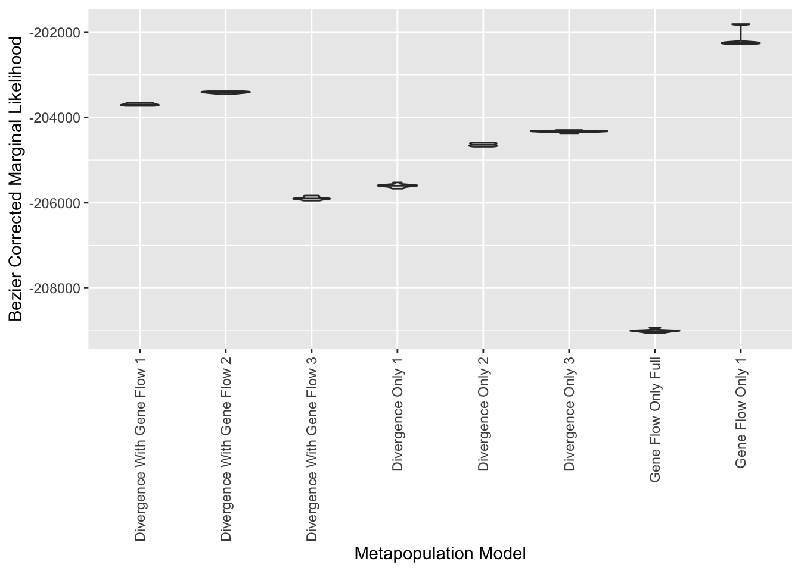
Zoom in on the top two models
likesPlot_zoom <- likesPlot + ylim(-229000, -228000) + geom_point()
likesPlot_zoomWarning: Removed 80 rows containing non-finite values (stat_ydensity).Warning in max(data$density): no non-missing arguments to max; returning -InfWarning: Computation failed in `stat_ydensity()`:
replacement has 1 row, data has 0Warning: Removed 80 rows containing missing values (geom_point).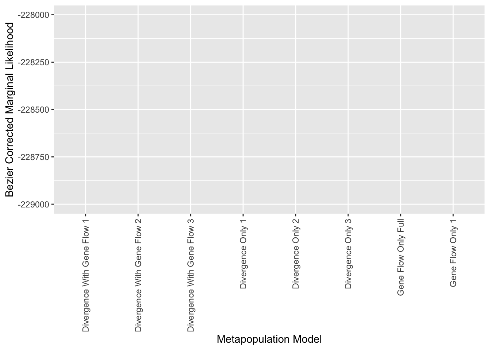
runDir <- "carbunculus/migrate/output"
likelist <- list()
for(r in 1:10){
rep = paste0("rep",r)
print(rep)
likelist[[rep]] <- harvest.model.likelihoods(workingDir=file.path(runDir,rep))
}
# Model selection for each replicate...
likelist %>% map(bfcalcs)The final model marginal likelihood estimates based on the mean of 10 replicates:
like.df <- likelist %>% bind_rows() %>% group_by(model)
means <- like.df %>% summarize(bezier.corrected = mean(bezier.corrected))
final_model <- bfcalcs(means)
final_modelDifference between panmixia and the second-place full model is very significant.
top.choice <- final_model$model[which(final_model$choice ==1)]
second.choice <- final_model$model[which(final_model$choice ==2)]
permTS(like.df$bezier.corrected[which(like.df$model == top.choice)],
like.df$bezier.corrected[which(like.df$model == second.choice)],
alternative = "greater", method = "exact.ce")
Exact Permutation Test (complete enumeration)
data: GROUP 1 and GROUP 2
p-value = 5.413e-06
alternative hypothesis: true mean GROUP 1 - mean GROUP 2 is greater than 0
sample estimates:
mean GROUP 1 - mean GROUP 2
1246.925 And a figure summarizing all this
models <- c("Divergence With Gene Flow 1","Divergence With Gene Flow 2",
"Divergence Only 1", "Divergence Only 2",
"Gene Flow Only 1", "Gene Flow Only 2",
"n-island", "panmixia")
likesPlot <- likelist %>% bind_rows() %>% group_by(model) %>%
ggplot(mapping = aes(x=model, y = bezier.corrected)) +
geom_violin(draw_quantiles = 0.5) +
theme(axis.text.x = element_text(angle = 90, vjust = 0.5, hjust=1)) +
scale_x_discrete(labels = models) +
labs(x = "Metapopulation Model", y = "Bezier Corrected Marginal Likelihood")
likesPlotWarning in regularize.values(x, y, ties, missing(ties), na.rm = na.rm):
collapsing to unique 'x' values
Zoom in on the top three models
likesPlot_zoom <- likesPlot + ylim(-204000, -202000) + geom_point()
likesPlot_zoomWarning: Removed 52 rows containing non-finite values (stat_ydensity).Warning: Removed 52 rows containing missing values (geom_point).